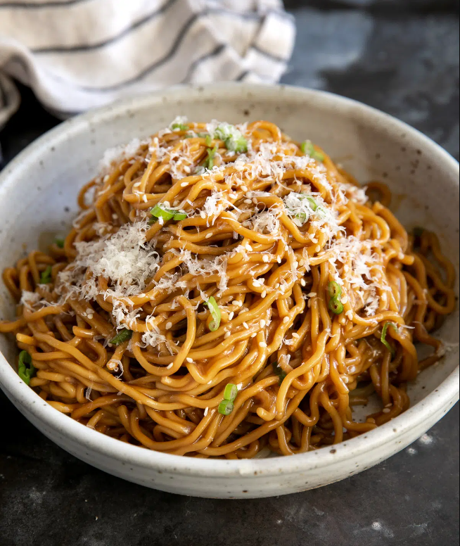

San Francisco Garlic Noodles

Description
Garlic Noodles are a San Francisco staple, according to chef J Kenji Lopez Alt.
This simple dish will surely blow your mind with its deep garlicky and umami flavors,
and it's a must cook if you like fusion cuisine
Ingredients
- 250g Noodles
- 30g oyster sauce
- 30g soy sauce
- 30g fish sauce
- 50g unsalted butter
- 6 cloves fresh garlic
- 30g Parmesan cheese
- 25g green onions or scallions
- 1 g red chili flakes
Instructions
- Cook noodles to al dente according to package instructions
- Combine oyster sauce, soy sauce and fish souce in a small bowl
- Melt butter in a large skillet. Add the minced garlic and cook until fragrant
- Add the prepared sauce to the garlic butter. Bring to simmer
- Add the cooked noodles to the simmering sauce. To thicken the sauce, add some of the noodle water
- Sprinkle with parmesan cheese, green onions (or scallions) and red chili flakes
- Serve on a bowl and enjoy!
Go back home